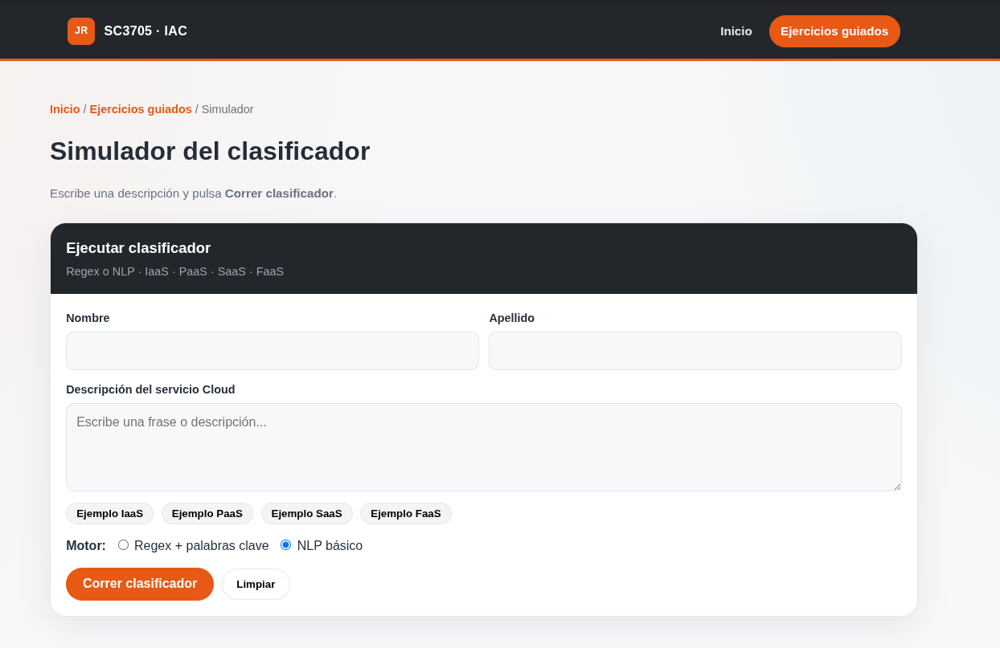
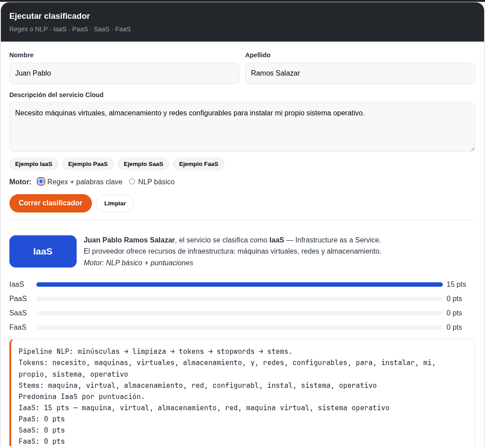
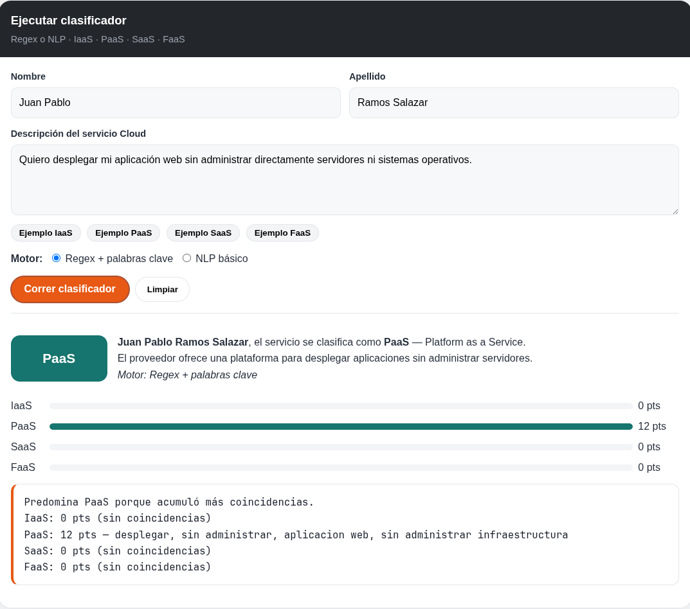
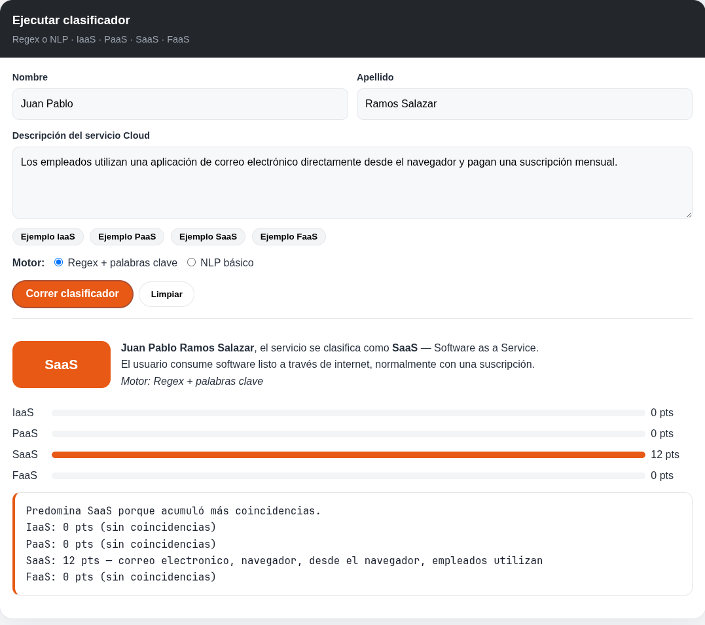
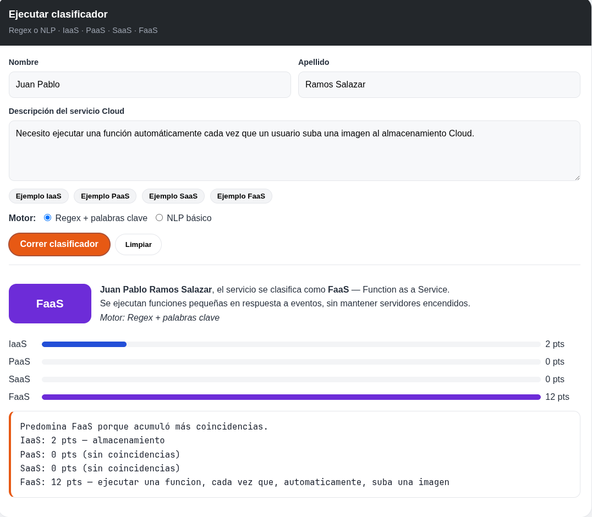

Universidad de Monterrey · SC3705 · Parcial 1
Ejercicio guiado 01: clasificador de modelos Cloud
Objetivo
Construir una aplicación que lea una descripción de un servicio Cloud y la clasifique como IaaS, PaaS, SaaS o FaaS. El trabajo parte de reglas y expresiones regulares, y después incorpora procesamiento básico de lenguaje. Un modelo de lenguaje no decide la categoría.
Primera versión con reglas
La aplicación de escritorio pide nombre, apellido y una descripción. Analiza el texto con palabras clave y expresiones regulares. Cada modelo tiene su propio criterio. Si no hay evidencia o hay empate, el resultado es indeterminado.
Organización de la solución
- La pantalla no concentra toda la lógica: captura datos y muestra el resultado.
- Se validan campos vacíos o textos demasiado cortos.
- La frase «sin administrar servidores» cuenta como PaaS, no como IaaS.
- En un flujo de «función al subir un archivo», el almacenamiento no gana a FaaS.
Casos de prueba
| Entrada | Esperada | Obtenida | ¿Correcta? |
|---|---|---|---|
| Máquinas virtuales, almacenamiento y redes para instalar mi propio SO. | IaaS | IaaS | Sí |
| Desplegar una aplicación web sin administrar servidores ni sistemas operativos. | PaaS | PaaS | Sí |
| Correo electrónico en el navegador con suscripción mensual. | SaaS | SaaS | Sí |
| Ejecutar una función cada vez que un usuario suba una imagen. | FaaS | FaaS | Sí |
| Instancias EC2, discos persistentes y red privada para instalar Linux. | IaaS | IaaS | Sí |
De reglas a lenguaje natural
El texto se pasa a minúsculas, se limpian signos, se quitan acentos, se parte en palabras, se eliminan palabras vacías, se reducen a raíces y se asignan puntos a cada modelo. Gana quien suma más. La misma frase se puede comparar con reglas puras y con este flujo.
Uso en consola
La ventana gráfica y la consola usan el mismo criterio de clasificación, para no mantener dos lógicas distintas.
Probar el clasificador
Puedes escribir una descripción y ver el modelo asignado, las puntuaciones y la justificación.
Evidencias





Trabajo en casa de este ejercicio
Las cuatro tareas del primer parcial están en su propio apartado, cada una en una página.